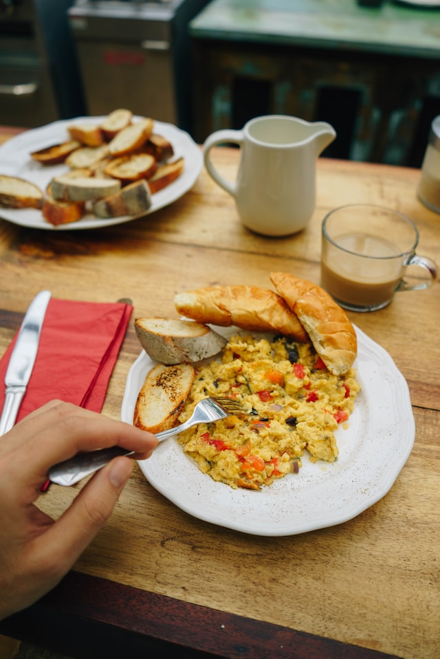

Rührei

Bildquelle: unsplash, giancescon
Rührei - ganz einfach
Wer das nicht kann, kann nichts
Zutaten
- Eier - pro Person 2-3
- etwas Milch
- Salz und Pfeffer oder fancy Gewürze wie Ei-Topping
Schritte
- Eier aufschlagen und in eine Schüssel geben.
- Mit einem Spritzer Milch verrühren, bis Eiweis, Eigelb und Milch gut vermischt sind.
- Ei-Masse in eine erhitzte Pfanne geben und bei mittlerer Hitze stocken lassen. Dabei regelmäßig rühren
- Rührei nach belieben mit Salz und Pfeffer würzen.
Quelle des Rezepts: eigener Content